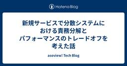
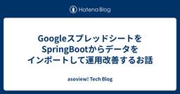
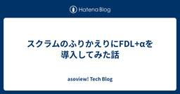
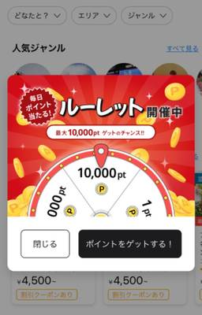
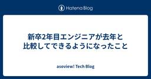
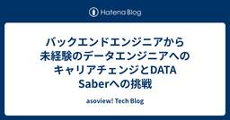
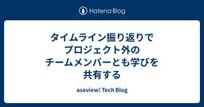
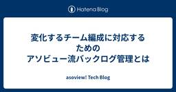
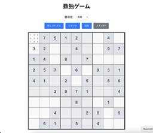

asoview! Tech Blog
https://tech.asoview.co.jp/
asoview! Tech Blog
フィード

Slack Workflow Builder でリリース承認フローの自動化をやってみる 4
4
asoview! Tech Blog
こちらの記事は、アソビュー！ Advent Calendar 2024の19日目（裏面）です。 はじめに 現状の課題 なぜ Slack Workflow Builder を使ったのか？ Slack Workflow Builder を使った「リリース承認ワークフロー」の作成 リリース承認依頼ボタンの作成 依頼フォームの作成 スレッドに承認依頼の内容を投稿 承認ボタン ボタンの注意点 リストへの追加 チェックボックスの内容をリストのチェックボックスに反映する 承認連絡 日次テストの依頼 未承認リスト まとめ 良かった点 惜しい点 最後に はじめに こんにちは！アソビューでエンジニアをしている白井…
1日前

新規サービスで分散システムにおける責務分解とパフォーマンスのトレードオフを考えた話 2
asoview! Tech Blog
アソビュー！ Advent Calendar 2024の19日目（表面）です。 アソビューにて海外事業を担当している江部です。今年の前半まではCTOで、今年からは心機一転して海外事業責任者を拝命し、これまでの国内向けサービスを拡張して海外向けのサービスを新規事業として立ち上げることにチャレンジしています。 役割は事業責任者ですが、MVP開発フェーズ終盤においてはプロダクトチームと一緒に開発に取り組んでいます。 今日はこの海外事業を立ち上げるにあたって、アーキテクチャ上の責務分解とシステム全体の性能のトレードオフについて悩んだことがあったので、そのお話をネタにしていきたいと思います。 背景 起こ…
1日前

GoogleスプレッドシートをSpringBootからデータをインポートして運用改善するお話
asoview! Tech Blog
こちらの記事は、アソビュー！ Advent Calendar 2024の18日目（B面）です。 はじめに アソビューでバックエンドエンジニアを担当しているアズマです。今回は、Googleスプレッドシートを使って人力でデータのやりとりをしているのを、 Spring Boot のWebアプリケーションからスプレッドシートのデータを取得して運用改善をする話です。 現在一部の業務で行われている内容 「アソビュー！」では提携していただいている体験事業者・レジャー施設様を、パートナーとお呼びしています。そして弊社ではパートナー様が販売しているチケットやアクティビティの予約を、定期的に月次ないしは一定の日数…
2日前

スクラムのふりかえりにFDL+αを導入してみた話
asoview! Tech Blog
この記事は、アソビュー！ Advent Calendar 2024の18日目（表面）です。 はじめに こんにちは。アソビューの新規事業開発チームでバックエンド開発を担当している進藤です。今回は、半年ほど前に結成された開発チームがスクラムのふりかえり手法として取り入れているFun, Done, Learn（以後FDL表記）についてご紹介します。この記事では、FDLを実際に導入して感じたメリット・デメリット、さらに私たちが行った工夫（+α）についてお伝えします。 簡単に経歴をお話しすると、私は昨年まで某SIerで10年間Javaエンジニアとして、ウォーターフォール型開発（以後WF表記）を中心に経験…
2日前

DatadogのDatabase Monitoringを使って非効率なSQLを見つける話 3
asoview! Tech Blog
はじめに こちらの記事は、アソビュー！ Advent Calendar 2024の17日目（裏面）です。 アソビューでSREを担当している鈴木です。 SREの大切なミッションの一つに可用性を保証するというミッションがあります。その可用性をすこしでも向上させるためにDatadogのDatabase Monitoringという機能を使って、改善した話を書きたいと思います。 SREという役割の大事なミッションの一つとして、障害の種を検出してそれを除去していくという活動を日々行うというものがあります。 これは、一般的な世界でわかりやすい例で例えるならば、健康診断などで病気を早期発見して、より長く健康状…
3日前

Brazeの In-App Messages を活用したゲーミフィケーション機能 2
asoview! Tech Blog
.entry-inner img{ border: 0.8px solid #a9a9a9; } .equal-width { width: 80%; table-layout: fixed; } こちらの記事は、アソビュー！ Advent Calendar 2024 の17日目（表面）です。 こんにちは。マーケットプレイス開発部の五十嵐です。 もうすぐクリスマスですね。みなさんは、どのようにお過ごしでしょうか？ 今年も我が家では子供達のためサンタさんの準備をしているのですが、6歳の息子の今年の願いは、Switchでハマっているソフトの追加コンテンツだそうです・・・。 ニンテンドープリペイドカ…
3日前

新卒2年目エンジニアが去年と比較してできるようになったこと 2
asoview! Tech Blog
はじめに アソビューAdvent Calendar 2024の16日目（裏面）です。🎄 こんにちは。アソビュー株式会社で主にフロントエンド開発を担当している髙木です。 2023年のアドベントカレンダーでは「文系学部出身者が入社してからおこなった3つのタスクと9つの学びについて」というテーマについて執筆しましたが、あれから１年が経ち学んだことやできることも増えたので、去年と比較してできるようになったことを紹介できればと思います。 特に新卒でエンジニアとして働いている方、アソビューのエンジニア組織に興味ある方にとって、参考になれば幸いです！ 入社1年目の振り返り まずは去年を振り返ってみたいと思い…
4日前

バックエンドエンジニアから未経験のデータエンジニアへのキャリアチェンジとDATA Saberへの挑戦 1
asoview! Tech Blog
バックエンドエンジニアから未経験のデータエンジニアへのキャリアチェンジとDATA Saberへの挑戦
4日前

タイムライン振り返りでプロジェクト外のチームメンバーとも学びを共有する 1
asoview! Tech Blog
こちらの記事は、アソビュー！ Advent Calendar 2024の15日目（表面）です。 はじめに こんにちは！アソビューでエンジニアをしている野口です。 今回は、私たちのチームで実施した振り返りについて紹介しようと思います。 開発を進める中でチーム内で複数のプロジェクトを並行して行うことがあると思います。私たちのチームもまさにそうだったのですが、そんなプロジェクトを通して得られた学びを共有するために先日「タイムライン振り返り」を行ったので、振り返りを実施するに至った背景や、具体的にどのように進めたのかを紹介します。 振り返りを行なった背景 私が当時いたチームには8人ほどのメンバーがおり…
5日前

変化するチーム編成に対応するためのアソビュー流バックログ管理とは 1
asoview! Tech Blog
この記事はアソビュー！ Advent Calendar 2024 の15日目（裏面）です。 こんにちは、アソビュー！を開発しているマーケットプレイス開発部の山内（@mauchi0106）です！ 秋もすっかり深まり冬になってきましたが、みなさまいかがお過ごしでしょうか？ 私は、先日の休みに山梨のフォレストアドベンチャー・こすげに行ってきました。 木々の中でのアスレチックをしたり、紅葉を見ながらのジップラインは爽快でとても楽しかったです！ ぜひ、みなさんも季節を感じに行って見てはいかがでしょうか。 さて、今回は私達が利用しているバックログ管理方法を紹介しようと思います。 はじめに チーム編成の変化…
5日前

ChatGPTとClaudeの比較から学ぶ！数独ゲームの実装とAI活用事例 1
asoview! Tech Blog
1. はじめに 2. ChatGPTとは 3. Claudeとは 4. プロジェクト作成 ChatGPTで挑戦 ChatGPTとのやり取りまとめ 最終的なコード 完成品 感想 Claudeで挑戦 Claudeとのやり取りまとめ 最終的なコード 完成品 感想 5. コードレビュー ChatGPT -> Claudeのコード Claude -> ChatGPTのコード 総合的な所見 6. まとめ ChatGPT Good More Claude Good More まとめ PR こちらの記事は、アソビュー！ Advent Calendar 2024 の14日目（裏面）です。 こんにちは！ アソビュ…
6日前
AndroidアプリのプロダクトコードにFlutterのAdd-to-appを試しに導入検証してみた
asoview! Tech Blog
はじめに こちらはアソビュー！ - Qiita Advent Calendar 2024 - Qiitaの14日目（A面）の記事です。 アソビューのAndroidアプリ開発を担当している田澤です。 最近はFlutterKaigi2024に行ってきました。Flutterへのリプレイスに関するセッションがいくつかあり、Add-to-appを利用してるようでした。今回はプロダクトコードのAndroidアプリにAdd-to-appを試しに導入してみた話となります。なぜプロダクトコードで行うかというとサンプルコードでは各種依存関係による修正作業が発生の有無がわからない、想定外の導入障壁が発生するかもしれ…
6日前

Spring WebFluxでリトライ処理を実現した話
asoview! Tech Blog
こちらの記事は、アソビュー！ Advent Calendar 2024 の13日目 シリーズ1です。 はじめに こんにちは！アソビューでバックエンドエンジニアをしております、佐藤です。 今回はSpring WebFluxを用いたAPIのリトライ処理を実装した話をご紹介したいと思います。 過去に、下記の記事でSpring WebFluxについて紹介しているので、Spring WebFluxをよくご存知ない方は併せて見ていただけたらと思います。 tech.asoview.co.jp 背景 9月にアソビューはモバイルアプリ版に「すべて見る」機能を追加しました。 この機能により、TOP画面に表示される…
7日前
1つのフォーム内で複数の送信ボタンを扱う 5
asoview! Tech Blog
はじめに この記事はアソビュー！ Advent Calendar 2024 の13日目（裏面）です。 こんにちは、アソビューでフロントエンドエンジニアをしている村井です。皆さんは、1つのフォームの中で2つの送信ボタンを扱ったことはありますか？ 複数の送信ボタン配置時に押されたボタンを判別したい 私が担当する開発において、同じ入力項目を使って「検索」と「CSVダウンロード」の2つの機能を実装することで、ユーザーが手間なく必要な情報を取得できるようにする必要がありました。 しかし、1つのフォームに複数の送信ボタンを配置すると、どのボタンが押下されたのかを判別する必要があります。 ボタンの区別ができ…
7日前

受け入れ基準（Acceptance Criteria）の導入から改善までの道のり
asoview! Tech Blog
アソビュー！ - Qiita Advent Calendar 2024 - Qiitaの12日目（表面）です。 はじめに こんにちは、アソビューでQAエンジニアを担当しております、石川和尚です！ 私は主に品質改善プロセスの立案やテスト設計、実行を担当しており、テストの効果的な実施と品質向上に向けて日々取り組んでいます。 その中で、今回は受け入れ基準について焦点を当てていこうと思います。 受け入れ基準とは、ユーザーや顧客、その他の認可団体が、コンポーネントやシステムを受け入れる際に満たすべき基準のことです。明確な目標や条件を基準として定めることで、認識のズレや手戻りを防ぎ、チーム全員で共通理解を…
8日前
MySQLでメタデータロックを考慮してALTER TABLEする
asoview! Tech Blog
アソビュー！ Advent Calendar 2024 12日B面 はじめに こんにちは。アソビューでエンジニアをやっています。小池です。 最近、MySQLのテーブルにインデックス追加 (ALTER TABLE) をしたのですが、その際にメタデータロックを発生させてしまい、一時的な障害につながりました。 今回の記事はその際の学びと再発防止案として、メタデータロックにタイムアウトを設定して安全にALTER TABLEを実行する話です。 よろしくお願いします！ ALTER TABLEとメタデータロック まず、メタデータロックについて簡単に説明し、今回起こった事象について整理していきます。 メタデー…
8日前
月間1億通のメルマガ配信システム（文章作成、配信基盤）を約3ヶ月で実現！締切厳守した方法
asoview! Tech Blog
アソビューAdvent Calendar 2024の11日目（裏面）です。🎄 今年のアドベントカレンダーは2面公開なので、ぜひ表面も御覧ください！ こんにちは、アソビューでチームリーダーをしている近藤です。 アソビューではSaaSを用いてメルマガ配信を運用していたのですが、メルマガの文章作成と配信基盤を内製化したことで大幅なコスト削減に成功しました。🎉 メルマガ配信システムの名称は「おくる君」となりました！ ひらがなにすることで「送る」と「贈る」の意味を兼ねるというアイデアが含まれています。 また、メルマガ配信結果のモニタリングダッシュボードを「みえるちゃん」にしています。 この記事では、メル…
9日前
モノリポで git worktree と sparse-checkout を組み合わせてみる
asoview! Tech Blog
アソビュー！ Advent Calendar 2024 の11日目です。 エンジニアの村松です🎅<ｺﾝﾁﾊ はじめに アソビューが提供するサービスは多数のアプリケーションで構成されており、これらのアプリケーションはモノリポで管理されています。アソビューのモノリポの取り組みについてはこちらのブログもぜひご覧ください！ tech.asoview.co.jp 以前、モノリポ + git worktree をテーマにテックブログを書きました。モノリポのアプリケーション群を、複数のブランチで同時にローカルで作業したい場合に git worktree を使うと便利ですね！という内容です。 tech.aso…
9日前
React+TypeScript 初挑戦！バックエンド出身エンジニアが学んだこと
asoview! Tech Blog
※アソビュー！ Advent Calendar 2024 (B面) の 10 日目の記事です。 アソビューで新規事業のプロダクト開発を行っている竹内です。 私はこれまで主にバックエンドとプロジェクトマネジメントに携わってきました。今回初めて React + TypeScript に挑戦したので、今回やったことを自身のためにも整理しつつ、ポイントだと感じたところを書いていきたいと思います。 はじめに まず私がどれくらいのフロントエンド歴かといいますと・・・ SI でバックエンド出身、最近までPjM中心 久しぶりにプレイングマネージャーでコードを書くことに フロントエンドをやったのは JQuery…
10日前
URL Inspection APIでGoogleインデックス状況を可視化
asoview! Tech Blog
「週末なにする？そんな時は、アソビュー！」でおなじみの遊び予約サイト「アソビュー！」のSEOを担当している西本です。この記事はアソビュー！ Advent Calendar 2024の10日目（A面）です。 今回はURL Inspection APIについてです。リリースされたのが2022年1月のため今更感はありますが。 僕は大規模サイトのテクニカルSEOが得意だと自称しています。重要な観点はいくつかあると思いますが、大規模サイト特有の難しさとして、膨大なページが存在することによりいかにGoogleに認識して欲しいページをGooglebotにクロールしてもらうか、Google検索結果に出て欲しい…
10日前
開発とQAの円滑な関係性の構築のために
asoview! Tech Blog
はじめに アソビュー！ - Qiita Advent Calendar 2024 - Qiitaの9日目(B面)の記事です。 はじめに QA課題と体制の変化 QA課題：品質はQAのテストだけでは担保できない 対策：QAはチーム化せず、各プロダクトチーム内にQAエンジニアが所属する体制に変化 新体制での気づき 気づき：QA用語は伝わらなければ多用しない方が良い 気づき：QAが品質を保証するという誤り 新体制での相乗効果 現体制でより良くするための取り組み 全員参加の品質改善活動 開発エンジニアとQAエンジニアの連携課題の解決 今後の課題と展望 さいごに アソビューでQAリーダーをしております、渡…
11日前
夏休みの自由研究感覚でLT会を楽しもう！社内イベントレポート
asoview! Tech Blog
はじめに アソビュー！ - Qiita Advent Calendar 2024 - Qiita の9日目（表面）です！ こんにちは！私はエンジニア兼技術広報をしている@koke_engineerです。 入社から半年、エンジニア同士が気軽に技術を共有し合える場を作りたい！ワクワクするような発表を通じて、エンジニア組織をさらに活発にしたい！という思いで、社内でLT（ライトニングトーク）会を企画しました。 この記事では、LT会の開催を通じて感じたことやエンジニア組織の雰囲気をお伝えします！ LT会とは LTとは、「Lightning Talk」の略で、短い時間でテーマを絞ったプレゼンテーションを行…
11日前
Tiptapでメールマガジン用のHTMLメールエディターを作った
asoview! Tech Blog
はじめに Tiptapとは メールマガジン配信内製化プロジェクトについて 背景と特徴 Tiptapを使ったHTMLメール作成機能の実装 機能要件について エディター、プレビュー機能 保存、編集とHTML出力機能 エクステンションの拡張性 構成要素について 編集パネルとエディター画面 カスタムエクステンションの活用 カスタムエクステンションの定義について addAttributes renderHTML addNodeView コンテンツの情報入力パネル 情報更新と各種インタラクションの実装 入力パネルからの情報更新 左パネルで選択したコンテンツを右パネルに表示する データの取得と保存について …
12日前
ts-protoで出力するコードにファクトリメソッドを追加して開発者体験を向上する
asoview! Tech Blog
こちらはアソビュー！ - Qiita Advent Calendar 2024 - Qiitaの8日目（A面）の記事です。 こんにちは。プロダクト本部のkaorun343です。フロントエンドエンジニアのチームでは継続的に開発環境の改善活動をおこなっています。今回はこの活動において実施した、ts-protoの出力結果の修正を紹介します。 背景 応答メッセージへのフィールド追加によりTypeScriptで型エラーが生じる 要求メッセージへのフィールド追加によりTypeScriptで型エラーが生じる 方針 設定ファイル outputEncodeMethods=false outputClientIm…
12日前
優先度からシステムテストの項目絞り込みをした話
asoview! Tech Blog
こちらの記事は、アソビュー！ Advent Calendar 2024の7日目（裏面）です。 はじめに アソビューでQAエンジニアとして働いている丸山と申します。一般顧客向け自社サイトを中心にQA業務を行っています。現在、日々の業務では主にテスト設計やテスト実施を担当しています。 ソフトウェア開発の現場でテストを設計する際、機能を参考にして単純にテスト項目を作成していくと、スケジュールに収まりきらないテスト量になる事態がしばしば発生すると思います。機能について詳しく調査すればするほど考慮すべき要素が多くなり項目数が膨らみますが、納期を後ろ倒しにすることはできず、「テスト項目を絞る必要がある」と…
13日前
Kotlin Multiplatform と Compose Multiplatform を利用して iOS、Androidアプリを爆速で作ってみた。
asoview! Tech Blog
はじめに Kotlin Multiplatform とは Compose Multiplatform とは 事前準備 動作環境 セットアップ プロジェクトの作成 構造 起動 Android アプリの起動 iOS アプリの起動 コード追加 変更点 実行結果 まとめ さいごに はじめに こんにちは！アソビューのバックエンドエンジニアのけんすーです。 先月まで Android 開発に携わっていましたが、チーム移動があり Android のコードに触れる機会が減ってしまいました。Jetpack Compose の記憶も薄れつつあります…。 そこで、リハビリも兼ねて個人的に注目している Kotlin M…
13日前
CloudFrontのContinuous Deploymentを使ったフロントエンド(SPA)のk8s移行
asoview! Tech Blog
はじめに こちらの記事は、アソビュー！ Advent Calendar 2024の６日目（表面）です。 PlatformSREチームの頭島です｡ 今回はCloudFrontのContinuous Deploymentを使って､フロントエンド(SPA)をS3からk8sに移行したお話です｡ 前提 アプリケーション構成 インフラはAWS上に構築しており､ほとんどのアプリケーションがAWS上のサービスにデプロイされています｡ バックエンドサービス ほとんどのアプリケーションがEKSにデプロイされています｡通知サービスなど一部のアプリケーションがLambdaで稼働しています｡ フロントエンド（SPA） …
14日前
遊び心が原動力！エンジニアがハマる自由研究の世界
asoview! Tech Blog
アソビュー！ - Qiita Advent Calendar 2024 - Qiitaの6日目（裏面）です。 アソビューで座席指定システムのエンハンスに携わっている東郷です。 はじめに エンジニアの皆さん、日々の仕事で技術に向き合う中で、「遊び心」を忘れてしまってはいませんか？ この記事では、私が業務外の余暇に取り組んだ自由研究の体験をもとに、気軽に技術の世界を探求する素晴らしさをお伝えできればと思います！ 自由研究のきっかけ 社内コミュニケーション施策の一環で「Slackでどんな絵文字が使われているか」を調査した際、カスタム絵文字が1000種類以上も登録されていることに驚きました。その中には…
14日前
Honoで始めるエッジコンピューティング：Cloudflare WorkersとD1で作るミニブログ
asoview! Tech Blog
1. はじめに こちらの記事は、アソビュー！ Advent Calendar 2024の５日目（裏面）です。 みなさんこんにちは、アソビューでエンジニアをしています竹村です。 以前からユーザーに近いエッジサーバーに分散してリクエストを処理するエッジコンピューティングの仕組みに興味を持っており、高負荷時や障害発生時にも重要な機能を低レイテンシかつ安定して提供する仕組みを作れるのではないかと考えていたのですが、なかなか触る機会もなく今日まできていました。 そこで今回は、Cloudflare Workers向けのシンプルで軽量なHonoフレームワークを使用し、記事の投稿、一覧表示、詳細表示機能を持っ…
15日前
受入基準（Acceptance Criteria）の導入。スクラムチームにおける開発者とQAの融合への挑戦
asoview! Tech Blog
開発者とQAの役割が分断されているせいで、品質や効率が低下していると感じたことはありませんか？例えば、開発者が作り上げた機能をQAがテストする段階で認識のズレから不具合が見つかり、手戻りが発生する。こんな経験はありませんか？
15日前